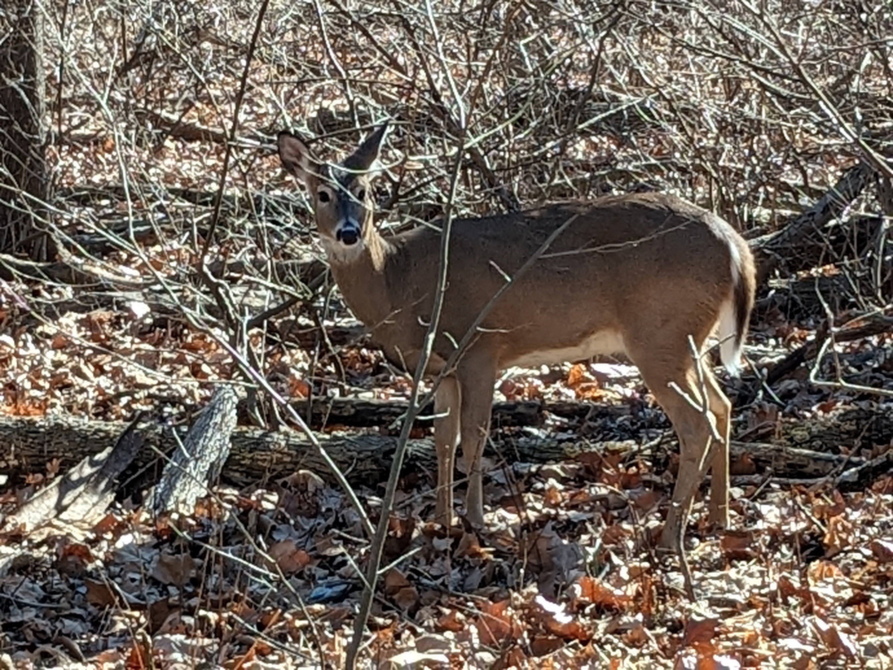
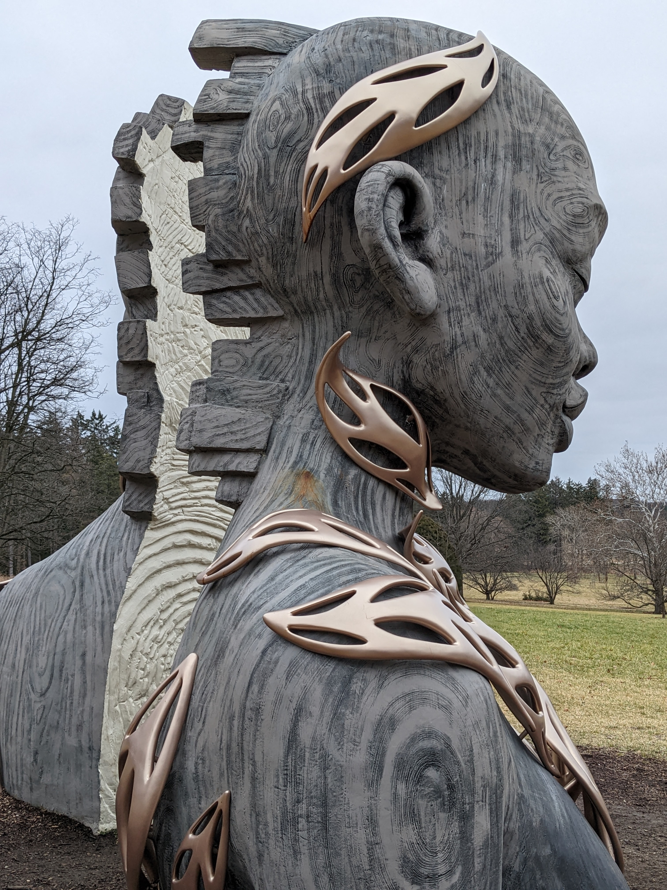

Illinois
Living in Illinois
Being born in Chicago you would think that I've done all the typical things there are for people to do growing up there. Sadly that's not the case for me as I didn't have all the advantages I would have today. Fortunately, I did what I could have done with what I had. I'm now living in Urbana-Champaign and it's been a nice mix of big city living and small quiet (for the most part). I think that the top question on people's mind when visiting a new place is, where to eat and what to do? So, from my own personal experience - my top choices for what to try!
The Food
- This is a hard one, pizza. I'm choosing, Pop-N-Pizza because that's what I remember the most as a child. Back when they had potato wedges (my favorite!).
- There are many Mexican places to choose from in Chicago, but if you're looking for a huge awesome burrito! La Fiesta on Archer is the place to check out.
- If you've ever heard of El Milagro's torillas, did you know they had a resturant? El Milagro Tortilla is a great place to get tacos that are more meat than taco (haha) seriously worth a try.
- Sorry Urbana-Champaign, I haven't tried what you have to offer yet!
The Places
- Museums! From the Field Museum to the Museum of Ice Cream(I need to check this one). Chicago has museums everywhere to learn something new.
- Architecture! Chicago is known for its amazing looking cityscapes and old architecture.
- Parks and Beaches. I'm not one for the beach, but there are lots of chances to sit in the sun and dip your toes in some cold water!



